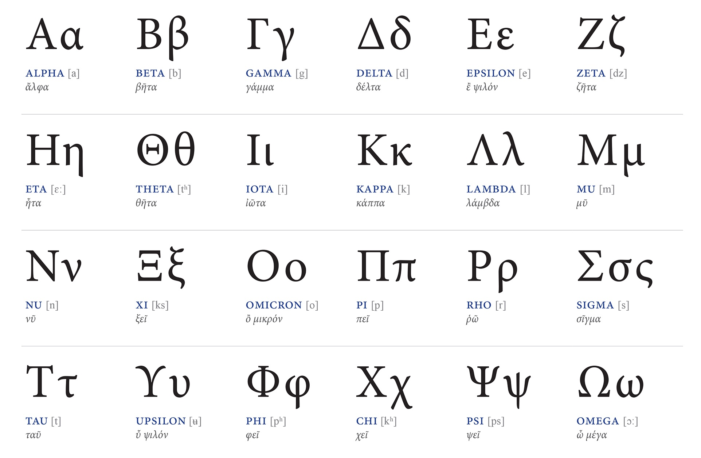

x = 3
x != 5 & x != 4Social Science
Math Camp
Agenda
- Who are we?
- What is math camp?
- Who are you?
- What are we going to cover?
- Start math camp content
Who are we?
Co-instructors
Artur Baranov
PhD Student in Political Science
artur.baranov@u.northwestern.edu
Gustavo Diaz
Assistant Professor of Instruction in Political Science
gustavo.diaz@northwestern.edu
Aven Peters
PhD Student in Sociology
aven.peters@u.northwestern.edu
What is math camp?
Math camp
. . .
- A (re)introduction to math topics necessary for the quantitative methods sequence
Goals:
- Get to know you and meet your methods training needs/goals
- Get to know your colleagues
Math camp
- A (re)introduction to math topics necessary for the quantitative methods sequence
Why a math camp?
- Can always use more methods training
- More of a methods camp
Who are you?
- Name
- Pronouns
- Discipline + intended subfield/research area
- A hobby or interesting fact about yourself
What are we going to cover?
| Day | Date | Morning | Afternoon |
|---|---|---|---|
| 1 | September 16 | Notation, sets, functions | R and RStudio |
| 2 | September 17 | Matrices | Tidyverse I |
| 3 | September 18 | Calculus I | Tidyverse II |
| 4 | September 19 | NO MEETING | NA |
| 5 | September 20 | Calculus II | Sampling and simulation |
. . .
Morning: Math (9AM - noon)
Lunch: Meet faculty, students (noon - 1PM)
Break (1-1:30PM)
Afternoon: R programming (1:30-4PM)
See gustavodiaz.org/NUmathcamp for content
Expectations
- You are not being evaluated
- No need to take extensive notes
- Bring a laptop
- Engage
- Get things wrong
- Ask
- Interrupt if you need to
Questions?
Break
Notation, Sets, Functions
What is this?
- Symbols, letters, formulae used over plain language
- Goal: Talk about stuff in general terms
- Downside: Harder to follow
- Conjecture: Math is not hard, its language is
- Solution: Practice
Set Notation
Set: A collection of elements
. . .
Numerical sets
- \(\mathbb{N}\): Natural numbers \(\{(0), 1, 2, 3\}\)
- \(\mathbb{Z}\): Integers \(\{\ldots, -3, -2, -1, 0, 1, 2, 3, \ldots\}\)
- \(\mathbb{Q}\): Rational numbers \(\{1/2, 3/2, 4\}\)
- \(\mathbb{R}\): Real numbers \(\{-899.8, 22, 4.5, \sqrt{\pi}\}\)
- \(\mathbb{I}\): Imaginary numbers \(\{ai | a \in \mathbb{R}, i= \sqrt{-1}\}\)
- \(\mathbb{C}\): Complex numbers \(a + bi\)
Measurement
- Sets can also have non-numerical elements
- We may code this as numbers or not, what matters is what we assume about the elements
- Nominal: No mathematical relationship between elements
- Ordinal: Order is meaningful
- Interval: Elements equidistant, but no meaningful zero
- Ratio (interval-ratio): There is a meaningful zero
Set notation
. . .
Operations within sets
- \(\exists\) “there exists”
- \(\forall\) “for all”
- \(\exists\) “exists”; there is something true
- \(\in\) “in” or “element of”
- | Such that
- \(\notin\) excluding (element)
- \(\equiv\) equivalent
Set notation
Operations between sets
- \(\subset\); \(\subseteq\) Subset
- \(\varnothing\) Empty set
- \(\cap\) Intersection; AND
- \(\cup\) Union; OR
- \(\setminus\) Difference
Practice
- \(\{x|x \in \mathbb{N}, x < 4\}\)
- \(\{x|x \in \mathbb{R}, x < 200\}\)
- \(\{ai | a \in \mathbb{R}, i= \sqrt{-1}\}\)
- \(A \cap B\)
- \(A \cup B\)
- \(\{4n \in \mathbb{N} | n \in \mathbb{N}\}\)
Greek notation
. . .

Notation chart
Greek
Letters like \(\mu\) denote parameters or quantities of interest
Markings like \(\widehat{\mu}\) denotes our estimate of such parameters/quantities
Latin
Letters like \(X\) denote variables in our data
Markings like \(\bar{X}\) denotes calculations from our data
\(X \rightarrow \bar{X} \rightarrow \widehat{\mu} \xrightarrow{\text{hopefully!}} \mu\)
Logic
- Sufficient: Y is true if A and B are true
- Necessary: Y is true if and only if A and B are true
- INUS: Insufficient but Necessary part of an Unnecessary but Sufficient set of conditions (component causes)
- SUIN: Sufficient but Unnecessary condition that is part of a condition set that is Insufficient but Necessary for the outcome (precipitating causes)
Logical operators in R
&AND|OR!NOT<LESS THAN<=LEQ>GREATER THAN>=GEQ==EXACTLY EQUAL TO!=NOT EQUAL TO%in%IN THE SET
Practice
. . .
3 > 4 | 15 == 12
. . .
LETTERS == letters
. . .
first_name = unlist(str_split("Gustavo", ""))
first_name %in% letters